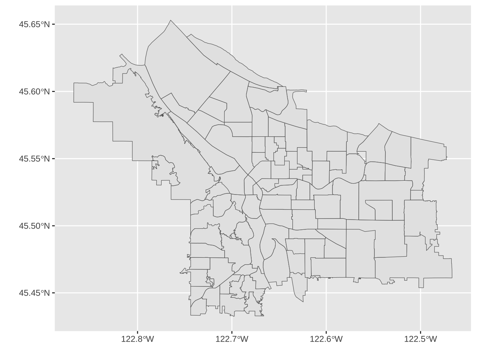
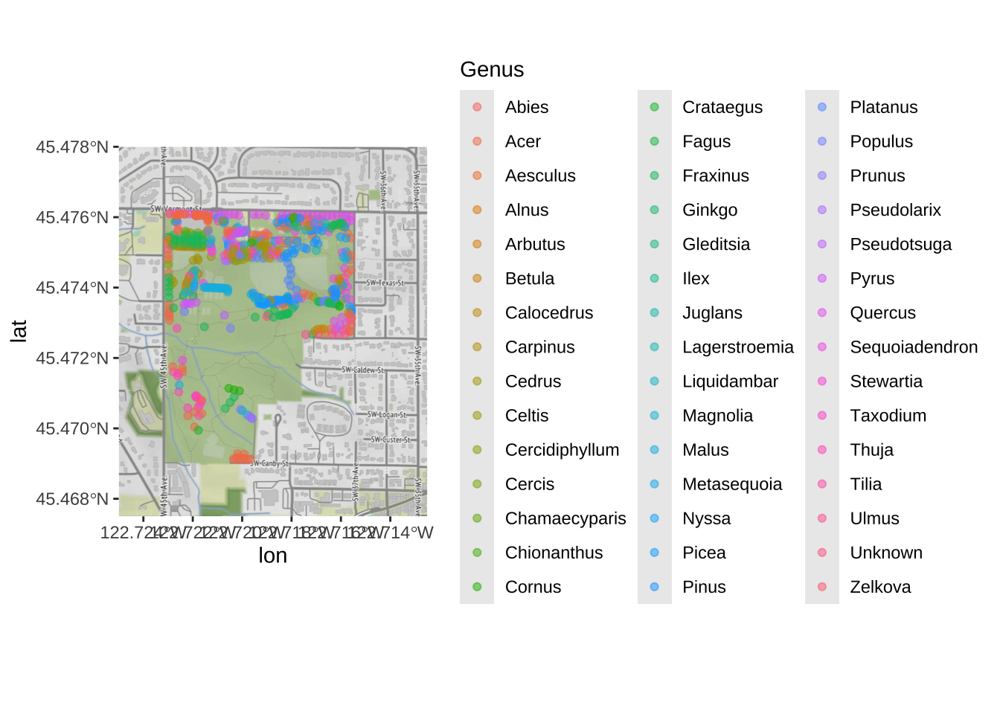

Lab 08: Maps & Cartography
BMI 5/625
Steven Bedrick
1 Getting Started
Today, we’ll be working with spatial data from the City of Portland’s GIS team. We’ll be working with a few different data sets, and will produce several types of maps. To begin, let’s load All The Libraries:
library(tidyverse)
library(sf)
library(sp)
library(tmap)
library(osmdata)
library(ggmap)
library(readxl)
library(classInt)
library(cowplot)
library(maps)
library(ggspatial)1.1 Downloading the data
The data sets we will be using today are:
1.2 An aside: Vector vs. Raster data
In GIS-speak, these data sets are all vector data sets, meaning that their contents are sets of x-y coordinates that define a feature of some kind: a point (e.g., a specific grocery store), a line or set of line segments (e.g., a road), or a polygon (e.g., the outline of a neighborhood, or the shape of the bank of a river). Each feature can have some number of attributes; what those attributes are will depend on the specific data set.
In contrast to vector formats are raster formats (sometimes called bitmap formats). Raster files consist of a uniform grid of numbers (pixels), whose value contain whatever information is being captured. One example of a raster image is a digital photograph (perhaps taken from an airplane or satellite), but that is only one form. Many kinds of remote sensing devices capture raster images, and in fact there is no requirement that the values of each pixel correspond to a sensor value at all- it can be a logical (categorical) value, as well.
Crucially, raster images often contain multiple channels (sometimes called bands), representing different sets of spatially-aligned data. One example of this would be a visible-spectrum true-color image, consisting of three bands (one for red, green, and blue). Another example might be bands for sensors capturing at different infrared wavelengths, or for different layers of data.
Like vector data, raster data files generally contain metadata situating the pixels in a specific geographic coordinate reference system. In other words, the raster file “knows” where its edges are in space, and also knows how much distance each pixel is meant to cover. One common raster file format is GeoTIFF, though there are certainly others.

1.3 Spatial data in a non-spatial format
Here’s the data from the City of Portland park tree inventory, in CSV format:
trees_raw <- read_csv("data/lab08/Parks_Tree_Inventory.csv")
glimpse(trees_raw)## Rows: 25,534
## Columns: 41
## $ X <dbl> -13658194, -13658213, -13658254, -13658227,…
## $ Y <dbl> 5712487, 5712485, 5712491, 5712487, 5712488…
## $ OBJECTID <dbl> 426, 427, 428, 429, 430, 431, 432, 433, 434…
## $ Inventory_Date <chr> "2017/05/09 00:00:00+00", "2017/05/09 00:00…
## $ Species <chr> "PSME", "PSME", "CRLA", "QURU", "PSME", "PS…
## $ DBH <dbl> 37.4, 32.5, 9.7, 10.3, 33.2, 32.1, 28.4, 27…
## $ Condition <chr> "Fair", "Fair", "Fair", "Poor", "Fair", "Fa…
## $ TreeHeight <dbl> 105, 94, 23, 28, 102, 95, 103, 105, 97, 112…
## $ CrownWidthNS <dbl> 44, 49, 28, 38, 43, 35, 40, 45, 56, 35, 45,…
## $ CrownWidthEW <dbl> 57, 45, 27, 31, 44, 39, 40, 29, 45, 33, 50,…
## $ CollectedBy <chr> "staff", "staff", "staff", "staff", "staff"…
## $ Notes <chr> NA, NA, NA, NA, NA, NA, NA, NA, NA, NA, NA,…
## $ CrownBaseHeight <dbl> 4, 4, 3, 5, 4, 12, 6, 13, 5, 17, 6, 6, 4, 5…
## $ GlobalID <chr> "{8413C6D7-038A-4685-AFCB-C3BCE4D90A24}", "…
## $ StaffReview <chr> NA, NA, NA, NA, NA, NA, NA, NA, NA, NA, NA,…
## $ created_user <chr> "PARKS_ADMIN", "PARKS_ADMIN", "PARKS_ADMIN"…
## $ created_date <chr> "2017/05/23 19:37:43+00", "2017/05/23 19:37…
## $ last_edited_user <chr> "PKJOSHUA", "PKJOSHUA", "PKJOSHUA", "PKJOSH…
## $ last_edited_date <chr> "2019/12/11 00:42:17+00", "2019/12/11 00:42…
## $ UserID <dbl> 1, 2, 3, 4, 5, 6, 7, 8, 9, 10, 11, 12, 13, …
## $ Structural_Value <dbl> 10101.06, 7900.55, 1110.81, 525.26, 8224.54…
## $ Carbon_Storage_lb <dbl> 3223.3, 2460.8, 310.3, 400.1, 2533.4, 2333.…
## $ Carbon_Storage_value <dbl> 209.07, 159.62, 20.13, 25.95, 164.33, 151.3…
## $ Carbon_Sequestration_lb <dbl> 36.8, 31.3, 14.8, 6.0, 32.0, 30.8, 26.8, 25…
## $ Carbon_Sequestration_value <dbl> 2.39, 2.03, 0.96, 0.39, 2.08, 2.00, 1.74, 1…
## $ Stormwater_ft <dbl> 150.3, 133.0, 35.4, 38.3, 115.5, 85.3, 99.7…
## $ Stormwater_value <dbl> 10.05, 8.89, 2.37, 2.56, 7.72, 5.70, 6.66, …
## $ Pollution_Removal_value <dbl> 18.25, 16.15, 4.31, 4.65, 14.03, 10.36, 12.…
## $ Pollution_Removal_oz <dbl> 40.4, 35.8, 9.5, 10.3, 31.1, 22.9, 26.8, 22…
## $ Total_Annual_Benefits <dbl> 30.69, 27.06, 7.64, 7.59, 23.82, 18.06, 20.…
## $ Family <chr> "Pinaceae", "Pinaceae", "Rosaceae", "Fagace…
## $ Genus <chr> "Pseudotsuga", "Pseudotsuga", "Crataegus", …
## $ Common_name <chr> "Douglas-fir", "Douglas-fir", "Lavalle hawt…
## $ Genus_species <chr> "Pseudotsuga menziesii", "Pseudotsuga menzi…
## $ Functional_type <chr> "CE", "CE", "BD", "BD", "CE", "CE", "CE", "…
## $ Size <chr> "L", "L", "S", "L", "L", "L", "L", "L", "L"…
## $ Native <chr> "Yes", "Yes", "No", "No", "Yes", "Yes", "Ye…
## $ Edible <chr> NA, NA, NA, NA, NA, NA, NA, NA, NA, NA, NA,…
## $ Nuisance <chr> NA, NA, NA, NA, NA, NA, NA, NA, NA, NA, NA,…
## $ Origin <chr> "North America - from British Columbia sout…
## $ Species_factoid <chr> "Bracts on cones look like a mouse's feet a…We can use it like any data frame:
trees_raw %>% ggplot(mapping=aes(x=TreeHeight)) + geom_histogram(bins=50) + ggtitle("Histogram of park tree height")
Let’s look closely at the X and Y columns:
| X | Y |
|---|---|
| -1.37e+07 | 5.71e+06 |
| -1.37e+07 | 5.71e+06 |
| -1.37e+07 | 5.71e+06 |
| -1.37e+07 | 5.71e+06 |
| -1.37e+07 | 5.71e+06 |
These clearly refer to some sort of spatial coordinates, and by convention we can guess that they are in a projected (rather than geographic) format- but without additional information it is difficult to know how to interpret them. One major limitation of the CSV format is that it does not make it easy to embed metadata like this in the file. This is particularly important when working with geospatial data! As such, we generally prefer to work with vector file formats such as ESRI’s Shapefile format, which includes metadata.
1.4 A different format: Shapefiles
The Portland Maps Open Data site allows us to download data in ESRI’s format; let’s take a look, using the sf package’s st_read function:
trees_shape <- st_read("/Users/bedricks/Downloads/Parks_Tree_Inventory-shp")## Reading layer `fd3ad191-4bf0-4577-b6ec-724baeb619792020413-1-a3eocm.isio' from data source `/Users/bedricks/Downloads/Parks_Tree_Inventory-shp' using driver `ESRI Shapefile'
## Simple feature collection with 25534 features and 39 fields
## Geometry type: POINT
## Dimension: XY
## Bounding box: xmin: -13667450 ymin: 5692149 xmax: -13635010 ymax: 5724486
## Projected CRS: WGS 84 / Pseudo-MercatorShapefiles, among other things, contain information about the coordinate reference system (CRS) that they are using:
st_crs(trees_shape)## Coordinate Reference System:
## User input: WGS 84 / Pseudo-Mercator
## wkt:
## PROJCRS["WGS 84 / Pseudo-Mercator",
## BASEGEOGCRS["WGS 84",
## DATUM["World Geodetic System 1984",
## ELLIPSOID["WGS 84",6378137,298.257223563,
## LENGTHUNIT["metre",1]]],
## PRIMEM["Greenwich",0,
## ANGLEUNIT["degree",0.0174532925199433]],
## ID["EPSG",4326]],
## CONVERSION["Popular Visualisation Pseudo-Mercator",
## METHOD["Popular Visualisation Pseudo Mercator",
## ID["EPSG",1024]],
## PARAMETER["Latitude of natural origin",0,
## ANGLEUNIT["degree",0.0174532925199433],
## ID["EPSG",8801]],
## PARAMETER["Longitude of natural origin",0,
## ANGLEUNIT["degree",0.0174532925199433],
## ID["EPSG",8802]],
## PARAMETER["False easting",0,
## LENGTHUNIT["metre",1],
## ID["EPSG",8806]],
## PARAMETER["False northing",0,
## LENGTHUNIT["metre",1],
## ID["EPSG",8807]]],
## CS[Cartesian,2],
## AXIS["easting (X)",east,
## ORDER[1],
## LENGTHUNIT["metre",1]],
## AXIS["northing (Y)",north,
## ORDER[2],
## LENGTHUNIT["metre",1]],
## USAGE[
## SCOPE["unknown"],
## AREA["World - 85°S to 85°N"],
## BBOX[-85.06,-180,85.06,180]],
## ID["EPSG",3857]]There’s a lot of information here, but looking through it we can see that the coordinates in this file are against the WGS 84 datum, and that the units are meters. Beyond that, the exact details are, for the moment, not that important. Just know that, taken all together, this is sufficient information for us to plot these points on a map and combine them with any other geospatial data we might encounter.
In many ways, the object we get back is like a data frame, in that there are columns, which have types, etc. In fact, most dplyr functions work just fine on these. One of the columns is called geometry, and is what store the actual coordinates of whatever objects are stored in the rows. In this case, each row is a tree, and the relevant geometry entry is a point.
trees_shape$geometry## Geometry set for 25534 features
## Geometry type: POINT
## Dimension: XY
## Bounding box: xmin: -13667450 ymin: 5692149 xmax: -13635010 ymax: 5724486
## Projected CRS: WGS 84 / Pseudo-Mercator
## First 5 geometries:## POINT (-13658194 5712487)## POINT (-13658213 5712485)## POINT (-13658254 5712491)## POINT (-13658227 5712487)## POINT (-13658234 5712488)For more information about this kind of file, see the documentation. A helpful deep-dive into the format of this object can be found here, if you’re really interested in what’s going on in that $geometry property. :-)
2 Our first map
Our first map will be a simple one, showing the various neighborhood boundaries in Portland.
pdx_boundaries <- st_read("data/lab08//Neighborhoods__Regions_-shp")## Reading layer `Neighborhoods__Regions_' from data source `/Users/bedricks/Dropbox/Work/Teaching/Spring 2021/Dataviz - in DMICE/labs/data-vis-labs-2021/data/lab08/Neighborhoods__Regions_-shp' using driver `ESRI Shapefile'
## Simple feature collection with 98 features and 10 fields
## Geometry type: MULTIPOLYGON
## Dimension: XY
## Bounding box: xmin: -13677560 ymin: 5689875 xmax: -13632920 ymax: 5724919
## Projected CRS: WGS 84 / Pseudo-Mercatorriver_boundaries <- st_read("data/lab08//Willamette_Columbia_River_Ordinary_High_Water-shp/")## Reading layer `Willamette_Columbia_River_Ordinary_High_Water' from data source `/Users/bedricks/Dropbox/Work/Teaching/Spring 2021/Dataviz - in DMICE/labs/data-vis-labs-2021/data/lab08/Willamette_Columbia_River_Ordinary_High_Water-shp' using driver `ESRI Shapefile'
## Simple feature collection with 1 feature and 5 fields
## Geometry type: MULTIPOLYGON
## Dimension: XY
## Bounding box: xmin: -13676470 ymin: 5686111 xmax: -13632810 ymax: 5727803
## Projected CRS: WGS 84 / Pseudo-MercatorOnce we have loaded the shapefiles, we have many options. The built-in base-R plot function can handle these, as can ggplot via sf’s geom_sf:
pdx_boundaries %>% ggplot() + geom_sf()
Let’s look more closely at our boundaries data set:
glimpse(pdx_boundaries)## Rows: 98
## Columns: 11
## $ OBJECTID <int> 1, 2, 3, 4, 5, 6, 7, 8, 9, 10, 11, 12, 13, 14, 15, 16, 17, …
## $ NAME <chr> "CATHEDRAL PARK", "UNIVERSITY PARK", "PIEDMONT", "WOODLAWN"…
## $ COMMPLAN <chr> NA, NA, "ALBINA", "ALBINA", NA, "ALBINA", "ALBINA", "ALBINA…
## $ SHARED <chr> NA, NA, NA, NA, NA, NA, NA, NA, NA, NA, NA, NA, NA, NA, NA,…
## $ COALIT <chr> "NPNS", "NPNS", "NPNS", "NECN", "CNN", "NPNS", "NPNS", "NEC…
## $ HORZ_VERT <chr> "HORZ", "HORZ", "VERT", "HORZ", "HORZ", "HORZ", "HORZ", "HO…
## $ MAPLABEL <chr> "Cathedral Park", "University Park", "Piedmont", "Woodlawn"…
## $ ID <int> 31, 88, 70, 93, 23, 2, 66, 19, 67, 84, 44, 48, 89, 63, 74, …
## $ Shape_Leng <dbl> 11434.255, 11950.860, 10849.327, 8078.361, 18179.392, 9466.…
## $ Shape_Area <dbl> 5424297.8, 6981456.8, 6079530.0, 3870553.6, 16580624.7, 458…
## $ geometry <MULTIPOLYGON [m]> MULTIPOLYGON (((-13664216 5..., MULTIPOLYGON (…We see that in addition to the geometry of the boundaries themselves, we also have other columns containing information about each neighborhood. Notably, one of these is called MAPLABEL- let’s take that as a suggestion and try labeling our regions:
pdx_boundaries %>% ggplot() + geom_sf() + geom_sf_label(aes(label=MAPLABEL))
That’s not especially useful, but perhaps if we zoom in a bit? We can modify our map’s viewport by using coord_sf
pdx_boundaries %>% ggplot() + geom_sf() +
coord_sf(
xlim=c(-13670000,-13630000),
ylim=c(5690000, 5710000)
)
Note that the coordinates here are in the same CRS as the original shapefile, but that the map itself is being projected into a geographic form. We’ll see shortly how we might convert coordinates between the two CRSs. In the meantime, let’s zoom in some more:
pdx_boundaries %>% ggplot() + geom_sf() +
coord_sf(
xlim=c(-13665000,-13655000),
ylim=c(5693277, 5698277)) +
geom_sf_label(aes(label=MAPLABEL))
Make a version of this map centered on _your_ neighborhood, zoomed such that each of the bordering neighborhoods is visible (if "each" is too many to be useful, go with "most" or "some").2.1 Adding a layer
There’s something missing from our map: the two lovely rivers that define our city’s geography. We have loaded a shapefile that describes the river; let’s have a look:
river_boundaries %>% glimpse()## Rows: 1
## Columns: 6
## $ OBJECTID <int> 1
## $ Id <int> 6720
## $ gridcode <int> 1
## $ Shape_Leng <dbl> 419214
## $ Shape_Area <dbl> 114297817
## $ geometry <MULTIPOLYGON [m]> MULTIPOLYGON (((-13669922 5...Unlike the pdx_boundaries data set, there’s not a lot of additional information in this one beyond the geometry (the Portland Maps site has additional data sets including bathymetric and other data). What does this geometry look like?
river_boundaries %>% ggplot() + geom_sf()
Hey, there’s our rivers! But the shape is grey; how might we turn it blue? geom_sf behaves like all other ggplot directives, and allows us to set aesthetic parameters directly or map them to data values:
river_boundaries %>% ggplot() + geom_sf(fill="blue")
We may also note that this map took a few seconds to render. That is because the geometry of the river is surprisingly complex, especially along the banks of the Columbia. We can help it out a bit by turning off the outline; rendering that is particularly challenging for the noisy parts of the river bank:
river_boundaries %>% ggplot() + geom_sf(fill="blue", size=0.0)
Now, how do we combine our river layer with our neighborhood boundary layer? Regular ggplot geoms can be combined arbitrarily, and so can geom_sf layers:
pdx_boundaries %>% ggplot() + geom_sf() + geom_sf(data=river_boundaries, fill="blue", size=0.0)
Putting it all together, we can see that coord_sf applies to both data layers, and also that regular ggplot themeing applies here as well:
pdx_boundaries %>% ggplot() +
geom_sf() +
geom_sf(data=river_boundaries, fill="blue", size=0.0) +
coord_sf(xlim=c(-13670000,-13630000), ylim=c(5690000, 5710000)) +
theme_minimal()
That blue is pretty deep and intense; change it to something a bit more river-like. While you're at it, the grey background for the neighborhoods is also a bit blah. Try changing it to something else.3 Converting between geographic coordinates and projection coordinates
The coordinates that the Portland Maps data are using are not in lat/long, but rather in meters. If you’d rather work with latitude and longitude, you can convert back and forth using sf_project(). The key is knowing how to tell it which CRS to use.
One option would be to give it all of the extensive and detailed information about the projection and datum that is found using st_crs(); fortunately, there exists a standardized registry of spatial reference systems, the EPSG Geodetic Parameter Dataset, and we can look up CRS configurations using their EPSG reference number.
p1 <- data.frame(lon=c(-122.65), lat=c(45.5))
# 4326 is WGS84, 3857 is the one that Portland Maps is using
# Interestingly, 3857 is basically WGS84, Mercator projected, and converted to use meters as units and easting/northing as its direction system (instead of lat/long)
# It is used by a variety of mapping software packages, hence why it's what Portland Maps gives.
sf_project(
sf::st_crs(4326), # from: default datum used by geom_sf
sf::st_crs(3857), # to: datum used by Portland Maps data
p1
)## [,1] [,2]
## [1,] -13653336 5700583p2 <- data.frame(lon=c(-13653336), lat=c(5700583))
sf_project(
sf::st_crs(3857), # from: datum used by Portland Maps data
sf::st_crs(4326), # to: default datum used by geom_sf
p2
)## [,1] [,2]
## [1,] -122.65 45.5Another common way to define a CRS is with a “PROJ.4” string. Instead of referring to a standard, predefined projection as with an EPSG code, the proj.4 string includes all of the necessary information to describe an arbitrary projection. Consider this example, from the geom_sf documentation:
world1 <- sf::st_as_sf(map('world', plot = FALSE, fill = TRUE))
ggplot() + geom_sf(data = world1)
# now, project to a Lambert Equal-Area Projection, centered at Antarctica:
world2 <- sf::st_transform(
world1,
"+proj=laea +y_0=0 +lon_0=155 +lat_0=-90 +ellps=WGS84 +no_defs"
)
ggplot() + geom_sf(data = world2)
A deep-dive into proj.4 strings is beyond the scope of this lab, but as a challenge: look closely at that string, and see if you can think of a way to modify it to project centered on Portland (lon: -122.65, lat: -45.5), to make the following plot:

Pick a _different_ projection, and show how it looks with at least _two_ different center points. [Here is a guide](https://mgimond.github.io/Spatial/coordinate-systems-in-r.html#understanding-the-proj4-coordinate-syntax) to a little bit more information about the syntax for the proj4 specification.4 Plotting Points
Now that we can draw a base map, it’s time to try plotting some data. Let’s load up the tree census, farmer’s marker, and grocery store data sets.
trees_shape <- st_read("data/lab08/Parks_Tree_Inventory-shp")## Reading layer `fd3ad191-4bf0-4577-b6ec-724baeb619792020413-1-a3eocm.isio' from data source `/Users/bedricks/Dropbox/Work/Teaching/Spring 2021/Dataviz - in DMICE/labs/data-vis-labs-2021/data/lab08/Parks_Tree_Inventory-shp' using driver `ESRI Shapefile'
## Simple feature collection with 25534 features and 39 fields
## Geometry type: POINT
## Dimension: XY
## Bounding box: xmin: -13667450 ymin: 5692149 xmax: -13635010 ymax: 5724486
## Projected CRS: WGS 84 / Pseudo-Mercatorfarmers_market <- st_read("data/lab08/Farmers_Markets-shp/")## Reading layer `Farmers_Markets' from data source `/Users/bedricks/Dropbox/Work/Teaching/Spring 2021/Dataviz - in DMICE/labs/data-vis-labs-2021/data/lab08/Farmers_Markets-shp' using driver `ESRI Shapefile'
## Simple feature collection with 20 features and 11 fields
## Geometry type: POINT
## Dimension: XY
## Bounding box: xmin: -13665000 ymin: 5696460 xmax: -13644270 ymax: 5714893
## Projected CRS: WGS 84 / Pseudo-Mercatorgrocery_stores <- st_read("data/lab08/Grocery_Stores-shp/")## Reading layer `Grocery_Stores' from data source `/Users/bedricks/Dropbox/Work/Teaching/Spring 2021/Dataviz - in DMICE/labs/data-vis-labs-2021/data/lab08/Grocery_Stores-shp' using driver `ESRI Shapefile'
## Simple feature collection with 123 features and 9 fields
## Geometry type: POINT
## Dimension: XY
## Bounding box: xmin: -13665520 ymin: 5686206 xmax: -13634020 ymax: 5718088
## Projected CRS: WGS 84 / Pseudo-MercatorBeginning with the farmer’s market data set:
glimpse(farmers_market)## Rows: 20
## Columns: 12
## $ OBJECTID <int> 1, 2, 3, 4, 5, 6, 7, 8, 9, 10, 11, 12, 13, 14, 15, 16, 17, …
## $ xcoord <dbl> 7639494, 7659590, 7667868, 7650248, 7652231, 7641969, 76715…
## $ ycoord <dbl> 668024.5, 688714.1, 682226.2, 666265.0, 675950.3, 680443.0,…
## $ Market <chr> "Hillsdale Farmers Market", "Hollywood Farmers Market", "Mo…
## $ Location <chr> "SW Capitol Highway and SW Sunset Boulevard", "NE 44th Aven…
## $ Day <chr> "Sunday", "Saturday", "Sunday", "Wednesday", "Wednesday", "…
## $ Open_Dates <chr> "March 3, 17 & 31, April 14; weekly April 28 - November 24…
## $ Open_Times <chr> "9 a.m. - 1 p.m", "8 a.m. - 1 p.m. (April - Sept) \n9 a.m. …
## $ Accepts <chr> "cash, credit, debit, SNAP (up to $10 match) and FDNP", "de…
## $ Website <chr> "http://www.hillsdalefarmersmarket.com", "http://hollywoodf…
## $ status <chr> "Active", "Active", "Active", "Active", "Active", "Active",…
## $ geometry <POINT [m]> POINT (-13658191 5697100), POINT (-13649708 5706344),…Just like we overlaid the river layer, we can do the same with the market. The coordinate systems are all aligned, so this will Just Work:
pdx_boundaries %>% ggplot() +geom_sf() +
geom_sf(data=river_boundaries, fill="blue", size=0.0) +
geom_sf(data=farmers_market) +
ggtitle("Portland Farmer's Markets") +
theme_minimal()
We use aesthetic mappings, like any other ggplot geom:
pdx_boundaries %>% ggplot() +geom_sf() +
geom_sf(data=river_boundaries, fill="blue", size=0.0) +
geom_sf(data=farmers_market, mapping=aes(color=Day)) +
ggtitle("Portland Farmer's Markets, by Day") +
theme_minimal()
Create a map showing the location of grocery stores and farmer’s markets, with a different point shape used to indicate which is which.
4.1 Adding more data
Let’s dig in a bit to the grocery store data set:
grocery_stores %>% glimpse## Rows: 123
## Columns: 10
## $ OBJECTID <int> 1, 2, 3, 4, 5, 6, 7, 8, 9, 10, 11, 12, 13, 14, 15, 16, 17, 1…
## $ ADDRESS <chr> "330 1ST ST, 97034", "1222 NE 102ND AVE, 97220", "7500 SW DA…
## $ NAME <chr> "Wizer's Grocery", "Winco Foods", "Winco Foods", "Winco Food…
## $ STATE_ID <chr> "21E03DD08300", "1N2E34BB 4300", "1S136DC04500", "1N2E26CC …
## $ BLDG_SQFT <int> 43128, 61599, 87996, 103040, 10000, 5257, 7596, 10711, 51825…
## $ STATUS <chr> "Existing", "Existing", "Existing", "Existing", "Existing", …
## $ TYPE <chr> "Independent or Ethnic Grocery", "Large Chain Grocery", "Lar…
## $ X <dbl> 7646238, 7674902, 7623671, 7680439, 7647761, 7652200, 763836…
## $ Y <dbl> 646225.0, 686504.9, 652777.9, 688331.7, 683210.1, 675961.4, …
## $ geometry <POINT [m]> POINT (-13655011 5687695), POINT (-13642965 5705539), …As before, we can map standard ggplot aesthetics:
pdx_boundaries %>% ggplot() +geom_sf() +
geom_sf(data=river_boundaries, fill="blue", size=0.0) +
geom_sf(data=grocery_stores, mapping=aes(color=TYPE)) +
ggtitle("Portland Grocery Stores, by Type") +
theme_minimal()
Note that for exploring this part of the data, we may wish to bring in additional layers- perhaps the routes of I-5 and I-205. Other major arterial roads may also be important (Foster, Powell, and 82nd on the East side come to mind, as does Barbur and Capitol Highway on the West side).
With this many data points, it may begin to make sense to look not at discrete points but rather at a density or contour plot. Making this is a tiny bit more complicated, since the X and Y columns in this particular data set do not seem to be in the same coordinate system, and it is not entirely obvious from the Portland Maps site what system those columns are in. üò£ Fortunately, the points in the $geometry column are just fine, and we can extract those using st_coordinates:
pdx_boundaries %>% ggplot() +
geom_sf() +
geom_sf(data=river_boundaries, fill="blue", size=0.0) +
geom_sf(data=grocery_stores, color=scales::alpha("seagreen", 0.45)) +
stat_density_2d(
data=data.frame(st_coordinates(grocery_stores$geometry)),
mapping=aes(X,Y),
color="red",
alpha=0.5) +
ggtitle("Portland Grocery Stores") +
theme_minimal()
We see a relative paucity of grocery stores in the far eastern part of the city as compared to the west and inner parts of the east side.
4.2 Now let’s look at the trees
The tree inventory data set is a different kettle of fish altogether. First, it is much larger:
nrow(trees_shape)## [1] 25534This means that plotting these points is going to be a lot more work for R. Furthermore, the distribution of the points is rather clumpy:
pdx_boundaries %>% ggplot() + geom_sf() +
geom_sf(data=river_boundaries, fill="blue", size=0.0) +
geom_sf(data=trees_shape)
In essence, each of those black blobs is hundreds of points overlaid on top of one another. If we do a contour map, we can see this more clearly:
pdx_boundaries %>% ggplot() + geom_sf() + stat_density_2d(data=trees_raw, aes(X, Y))
What is going on, here? Well, let’s zoom in a bit on Southwest portland:
pdx_boundaries %>% ggplot() + geom_sf() + geom_sf(data=river_boundaries, fill="blue", size=0.0) + geom_sf(data=trees_shape) + coord_sf(xlim=c(-13662000,-13658000), ylim=c(5693059, 5697583))
That large clump up in the upper left-hand corner is Gabriel Park, and we can see now that the individual points in this data set are crammed in close together because they represent trees that are literally next to one another in a park. Our contour map above is really just showing us what parts of town have a lot of tree-filled parks!
Let’s explore the tree data a bit more by zooming in to Gabriel Park. We’ll first subset our data to only include trees in that park, so let’s eyeball a bounding box:

We can guesstimate some lon/lat coordinates, and project them into map units:
p3 <- data.frame(lon=c(-122.725, -122.7125), lat=c(45.4675, 45.478))
sf_project(
sf::st_crs(4326), # to: default datum used by geom_sf
sf::st_crs(3857), # from: datum used by Portland Maps data
p3
)## [,1] [,2]
## [1,] -13661685 5695423
## [2,] -13660293 5697089And then use st_crop to filter our data set:
trees_in_park <- st_crop(trees_shape, xmin=-13661685, ymin=5695423, xmax=-13660293, ymax=5697089)
paste0("Total number of trees in original dataset: ", length(trees_shape$geometry))## [1] "Total number of trees in original dataset: 25534"paste0("Number of trees in our bounding box: ", length(trees_in_park$geometry))## [1] "Number of trees in our bounding box: 618"If we zoom in to just this box, what does our map look like?
pdx_boundaries %>% ggplot() + geom_sf() + geom_sf(data=river_boundaries, fill="blue", size=0.0) + geom_sf(data=trees_in_park) + coord_sf(xlim=c(-13661685,-13660293), ylim=c(5695423, 5697089)) 
Follow this process (cropping the data set to a bounding box, etc.) for a park in your neighborhood, and create a comparable map.
Note that, besides the trees themselves, this map is kind of boring. We can start to see the layout of trees in the park, but it’s hard to know how to contextualize it. At this zoom level, our neighborhood boundary data set is no longer especially useful. We might instead want other features: roads, etc. Or, we might want to base our map on other data entirely, like perhaps an aerial photo. One option would be for us to find that data (roads, for instance, are available from Portland Maps) and manually add it, the way we did with the rivers. There are easier options, however. Let’s look at how we might use a richer, pre-built map using OpenStreetMap data and ggmap.
4.3 ggmap
`ggmap is a package that tries to make it convenient to quickly access raster map tiles through either Google Maps or OpenStreetMap. Using Google Maps requires setting up an account with a credit card (though for reasonable numbers of requests, it is free); OSM via Stamen is free, so we’ll use that today.
st_bbox(trees_in_park)## xmin ymin xmax ymax
## -13661462 5695679 -13660633 5696789park_base_map <- get_stamenmap(
c(left=-122.725, bottom=45.4675, right=-122.7125, top=45.478),
zoom=16,
maptype="terrain") # try experimenting with "toner", etc. ## Source : http://tile.stamen.com/terrain/16/10426/23451.png## Source : http://tile.stamen.com/terrain/16/10427/23451.png## Source : http://tile.stamen.com/terrain/16/10428/23451.png## Source : http://tile.stamen.com/terrain/16/10426/23452.png## Source : http://tile.stamen.com/terrain/16/10427/23452.png## Source : http://tile.stamen.com/terrain/16/10428/23452.png## Source : http://tile.stamen.com/terrain/16/10426/23453.png## Source : http://tile.stamen.com/terrain/16/10427/23453.png## Source : http://tile.stamen.com/terrain/16/10428/23453.png## Source : http://tile.stamen.com/terrain/16/10426/23454.png## Source : http://tile.stamen.com/terrain/16/10427/23454.png## Source : http://tile.stamen.com/terrain/16/10428/23454.pngggmap(park_base_map)
Let’s try plotting the trees over our base map:
# ggmap isn't smart enough to reproject, so we need to by hand
trees_park_projected <- st_transform(trees_in_park, sf::st_crs(4326))
ggmap(park_base_map) +
geom_sf(data=trees_park_projected, inherit.aes = FALSE) # note - this is needed due to a slight quirk between ggmap, ggplot, and geom_sf
Now that we have our points on a map, let’s color by the type of tree:
ggmap(park_base_map) +
geom_sf(data=trees_park_projected, inherit.aes = FALSE,
alpha=0.5,
mapping=aes(color=Genus)) # just like any other ggplot geom## Coordinate system already present. Adding new coordinate system, which will replace the existing one.Clearly, there are too many levels for this variable to be truly useful; we would want to do some sort of additional categorizing. But it is enough to see that there are some general patterns of what kinds of trees were inventoried in which part of the park!
4.4 ggspatial
ggspatial is another extension to ggplot that makes OpenStreetMap base data easy to work with. Unlike ggmap, it is able to automatically deal with projections:
ggplot() + annotation_map_tile(type="osm") + layer_spatial(trees_in_park)
ggspatial has several other handy features for annotating geodata that go beyond what geom_sf has to offer.
Using either ggmap or ggspatial, take your local park’s tree map (from challenge #5) and place it on a OpenStreetMap raster tile. Use at least one aesthetic mapping (color, point shape, etc.) to visualize at least one type of data about the trees (other than genus).
Feel free to experiment with different map tile styles!
4.5 Interactive Map
What about interactivity? Leaflet is a powerful library for interactive maps, and has excellent R integration. We will also use the leaflet.esri extension, so we can use ESRI’s aerial photos.
library(leaflet)
library(leaflet.esri)## Loading required package: leaflet.extrasAs with ggmap, Leaflet wants things in WGS84 and will not automatically reproject our data for us, so we will need to work with trees_park_projected:
# now make a map with leaflet!
leaflet(trees_park_projected) %>% # we can pass in a dataframe to use...
addEsriBasemapLayer(esriBasemapLayers$Imagery) %>%
setView(-122.719, 45.474, zoom=16) %>%
addCircleMarkers()One nice thing about Leaflet maps is that we can allow the user to see more information about individual data points, via the label and related properties.
leaflet(trees_park_projected) %>%
addEsriBasemapLayer(esriBasemapLayers$Imagery) %>%
setView(-122.719, 45.474, zoom=16) %>%
addCircleMarkers(label = ~Genus_spec) # we can refer to properties of the data frame this wayNote: Leaflet works well with Shiny, and has leafletOutput/renderLeaflet functions that behave as you would expect.
5 How about a chloropleth map?
Changing gears, we now turn to chloropleth maps. We will be working with 2010 Cenus data from Portland. This data set includes a great deal of information about each neighborhood’s demographics; for now, we will work with the total population.
pdx_population <- read_excel("data/lab08/Census_2010_Data_Cleanedup.xlsx",
sheet="Census_2010_Neighborhoods",
range="A7:B101",
col_names = c("Neighborhood", "Total.Pop")) %>%
mutate(Neighborhood=as.factor(Neighborhood))
# we need to do a tiny bit of cleanup; the census spreadsheet has some slightly different names
pdx_population <- pdx_population %>% mutate(Neighborhood=recode(Neighborhood,
"ARGAY" = "ARGAY TERRACE",
"BROOKLYN" = "BROOKLYN ACTION CORPS",
"BUCKMAN" = "BUCKMAN COMMUNITY ASSOCIATION",
"CENTENNIAL" = "CENTENNIAL COMMUNITY ASSOCIATION",
"CULLY" = "CULLY ASSOCIATION OF NEIGHBORS",
"CENTENNIAL" = "CENTENNIAL COMMUNITY ASSOCIATION",
"DOWNTOWN" = "PORTLAND DOWNTOWN",
"GOOSE HOLLOW" = "GOOSE HOLLOW FOOTHILLS LEAGUE",
"HAYDEN ISLAND" = "HAYDEN ISLAND NEIGHBORHOOD NETWORK",
"HOSFORD-ABERNETHY" = "HOSFORD-ABERNETHY NEIGHBORHOOD DISTRICT ASSN.",
"IRVINGTON" = "IRVINGTON COMMUNITY ASSOCIATION",
"LLOYD DISTRICT" = "LLOYD DISTRICT COMMUNITY ASSOCIATION",
"NORTHWEST DISTRICT" = "NORTHWEST DISTRICT ASSOCIATION",
"OLD TOWN-CHINATOWN" = "OLD TOWN COMMUNITY ASSOCIATION",
"PARKROSE HEIGHTS" = "PARKROSE HEIGHTS ASSOCIATION OF NEIGHBORS",
"PEARL" = "PEARL DISTRICT",
"SABIN" = "SABIN COMMUNITY ASSOCIATION",
"SELLWOOD-MORELAND" = "SELLWOOD-MORELAND IMPROVEMENT LEAGUE",
"SOUTHWEST HILLS" = "SOUTHWEST HILLS RESIDENTIAL LEAGUE",
"SUMNER" = "SUMNER ASSOCIATION OF NEIGHBORS",
"SUNDERLAND" = "SUNDERLAND ASSOCIATION OF NEIGHBORS",
"WILKES" = "WILKES COMMUNITY GROUP"
))
# and now left join with our boundary data set- note that there will be some regions with no population data
boundaries_with_pop <- left_join(pdx_boundaries, pdx_population, by=c("NAME"="Neighborhood"))
boundaries_with_pop %>% glimpse## Rows: 98
## Columns: 12
## $ OBJECTID <int> 1, 2, 3, 4, 5, 6, 7, 8, 9, 10, 11, 12, 13, 14, 15, 16, 17, …
## $ NAME <chr> "CATHEDRAL PARK", "UNIVERSITY PARK", "PIEDMONT", "WOODLAWN"…
## $ COMMPLAN <chr> NA, NA, "ALBINA", "ALBINA", NA, "ALBINA", "ALBINA", "ALBINA…
## $ SHARED <chr> NA, NA, NA, NA, NA, NA, NA, NA, NA, NA, NA, NA, NA, NA, NA,…
## $ COALIT <chr> "NPNS", "NPNS", "NPNS", "NECN", "CNN", "NPNS", "NPNS", "NEC…
## $ HORZ_VERT <chr> "HORZ", "HORZ", "VERT", "HORZ", "HORZ", "HORZ", "HORZ", "HO…
## $ MAPLABEL <chr> "Cathedral Park", "University Park", "Piedmont", "Woodlawn"…
## $ ID <int> 31, 88, 70, 93, 23, 2, 66, 19, 67, 84, 44, 48, 89, 63, 74, …
## $ Shape_Leng <dbl> 11434.255, 11950.860, 10849.327, 8078.361, 18179.392, 9466.…
## $ Shape_Area <dbl> 5424297.8, 6981456.8, 6079530.0, 3870553.6, 16580624.7, 458…
## $ Total.Pop <dbl> 3349, 6035, 7025, 4933, 13209, 6153, 6093, 9550, 6363, 2137…
## $ geometry <MULTIPOLYGON [m]> MULTIPOLYGON (((-13664216 5..., MULTIPOLYGON (…Now that we’ve got the population column, we can tell geom_sf to use it for the “fill” aesthetic:
boundaries_with_pop %>% ggplot() +
geom_sf(aes(fill=Total.Pop)) +
scale_fill_gradient() +
geom_sf(data=river_boundaries, fill="blue", size=0.0) 
Note, however, that this is forgetting the first rule of chloropleth maps: beware of differing region sizes! We should really be plotting population density- people per square kilometer, or something like that.
# compute people per square kilometer
# NB: Shape_Area is in meters^2
boundaries_with_pop <- boundaries_with_pop %>%
mutate(adj_pop = (Total.Pop / (Shape_Area / 1E6))) %>% arrange(adj_pop)Now, let’s look at our revised map:

That’s much better!
Look at the original spreadsheet and pick another column of interest (besides total population); revise the data ingest process, and map that column instead.
5.1 Setting Color Scales
The default colors have two big issues: first, they are blue, so conflict with the river; second, we have some missing data (i.e., neighborhoods where we don’t have population data) and those are not apparent in this scale; third, the scale may be highlighting certain differences at the expense of others. Let’s explore some different coloring options! First, let’s familiarize ourselves with the data distribution across neighborhoods.

We can see straight away that the distribution is not uniform- there are some outlier neighborhoods with much higher population density. Another way to look at this is with a histogram:
If we have uniform distribution of data, a uniform color scale may be what we want, but in this case it is not: the color range is going to be very compressed down in the range at which most of the data lives. Let’s explore four different options:
- Equal spacing across the entire range of data
- Quantile spacing (i.e., color breaks at each quantile boundary)
- A simple breaking scheme that takes into account the data’s variability
- A more sophisticated adaptive scheme (Jenks’ algorithm), that looks for “natural” breaks in the range of data.
# following https://blog.datawrapper.de/how-to-choose-a-color-palette-for-choropleth-maps/
# and https://rpubs.com/danielkirsch/styling-choropleth-maps
min.pop <- min(boundaries_with_pop$adj_pop, na.rm=TRUE)
max.pop <- max(boundaries_with_pop$adj_pop, na.rm=TRUE)
diff.pop <- max.pop - min.pop
std.dev.pop <- sd(boundaries_with_pop$adj_pop, na.rm = TRUE)
# some possible color break points
equal.interval <- seq(min.pop, max.pop, by= diff.pop / 6)
quantile.interval <- quantile(boundaries_with_pop$adj_pop, probs=seq(0, 1, by = 1/6), na.rm = TRUE)
std.interval <- c(seq(min.pop, max.pop, by=std.dev.pop), max.pop)
jenks.interval <- classIntervals(boundaries_with_pop$adj_pop, n=6, style='jenks')$brks## Warning in classIntervals(boundaries_with_pop$adj_pop, n = 6, style = "jenks"):
## var has missing values, omitted in finding classes# now let's store the relevant break point in a variable:
boundaries_with_pop$pop.equal = cut(boundaries_with_pop$adj_pop, breaks=equal.interval, include.lowest = TRUE)
boundaries_with_pop$pop.quantile = cut(boundaries_with_pop$adj_pop, breaks=quantile.interval, include.lowest = TRUE)
boundaries_with_pop$pop.std = cut(boundaries_with_pop$adj_pop, breaks=std.interval, include.lowest = TRUE)
boundaries_with_pop$pop.jenks = cut(boundaries_with_pop$adj_pop, breaks=jenks.interval, include.lowest = TRUE)
popDensBarChart <- function(break_col) {
boundaries_with_pop %>%
filter(!is.na(adj_pop)) %>%
ggplot(mapping = aes(x=fct_reorder(MAPLABEL, -adj_pop), y=adj_pop)) +
geom_col(aes(fill=.data[[break_col]])) +
# theme(axis.text.x=element_text(angle=270, hjust=0, size=6, vjust=0.5)) +
theme(axis.text.x=element_blank(), axis.ticks.x=element_blank()) +
scale_y_continuous(name=expression("People/km" ^2)) +
scale_x_discrete(name=NULL) +
scale_fill_discrete(guide=FALSE) +
ggtitle(break_col)
}
plot_grid(
popDensBarChart("pop.equal"),
popDensBarChart("pop.quantile"),
popDensBarChart("pop.std"),
popDensBarChart("pop.jenks"),
nrow=2, ncol=2
)
We can see here that the quantile method is probably not what we want: lots of the denser counties are getting lumped together in a way that they probably shouldn’t be. Now let’s try using different ones of these for our map. While we’re at it, we are going to change our color scheme as well.


Perform a similar analysis for the census data column you are working with. Is six the right number of bins? Which method works best for your specific data?
6 Using tmap
tmap is a powerful library for “thematic maps”- chloropleth maps, etc. It has some additional capabilities beyond what ggplot and geom_sf have to offer.
tm_shape(pdx_boundaries) +
tm_fill() +
tm_borders() +
tm_shape(river_boundaries) +
tm_fill(col="blue")
7 Useful Shiny App for Bounding Box Calculation
This is a small Shiny app for helping with finding bounding box locations.
library(shiny)
ui <- fluidPage(
titlePanel("Bounding Box Calculator"),
fluidRow(
column(6, plotOutput("boundaryPlot", click="plot_click")),
column(6, plotOutput("zoomedMap"))
),
textOutput("clicked_pt")
)
server <- function(input, output, session) {
pdx_bbox <- st_bbox(pdx_boundaries)
centerX <- pdx_bbox$xmin + ((pdx_bbox$xmax - pdx_bbox$xmin) / 2)
centerY <- pdx_bbox$ymin + ((pdx_bbox$ymax - pdx_bbox$ymin) / 2)
# initial values
vals <- reactiveValues(
x=centerX,
y=centerY
)
# udpate on click
observeEvent(input$plot_click, {
vals$x = input$plot_click$x
vals$y = input$plot_click$y
})
output$boundaryPlot <- renderPlot({
pdx_boundaries %>% ggplot() + geom_sf() +
geom_sf(data=river_boundaries, fill="blue", size=0.0) +
geom_hline(yintercept=vals$y, linetype="dashed", color="red", alpha=0.7) +
geom_vline(xintercept = vals$x, linetype="dashed", color="red", alpha=0.7)
})
output$zoomedMap <- renderPlot({
pdx_boundaries %>% ggplot() +
geom_sf() +
geom_sf(data=river_boundaries, fill="blue", size=0.0) +
coord_sf(xlim=c(vals$x - 2000,vals$x + 2000), ylim=c(vals$y - 2000, vals$y + 2000)) +
geom_sf_label(aes(label=MAPLABEL))
})
output$clicked_pt <- renderText(paste0("lon: ", vals$x, " lat: ", vals$y))
}
shinyApp(ui = ui, server = server)##
## Listening on http://127.0.0.1:6686## Warning: range backtransformation not implemented in this coord; results may be
## wrong.
## Warning: range backtransformation not implemented in this coord; results may be
## wrong.